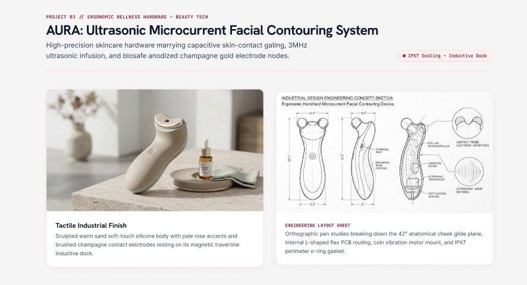

Overview
High-precision skincare hardware marrying capacitive skin-contact gating, 3 MHz ultrasonic infusion and biosafe anodised champagne gold electrode nodes.
A handheld microcurrent facial contouring device that has to feel like a beauty object while behaving like a piece of regulated hardware.
The brief was ergonomic wellness hardware crossed with beauty tech — the engineering is invisible, but it is what makes the ritual safe to repeat.
Skin-contact gating
The device only energises its electrodes when it can confirm genuine skin contact, using capacitive sensing. That single behaviour is what separates a wellness tool from a hazard.
Ergonomics and the glide plane
Orthographic pen studies break down the 42-degree anatomical cheek glide plane, so the head sits naturally against the face through a full pass rather than forcing the wrist to compensate.
The body is sculpted warm-sand soft-touch silicone with pale rose accents, resting on brushed champagne contact electrodes.
Engineering layout
Internally the device routes an L-shaped flex PCB around a coin vibration motor mount, sealed to IPX7 by a perimeter O-ring gasket and charged from a magnetic travertine inductive dock.
Gallery